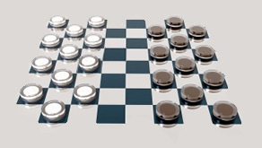
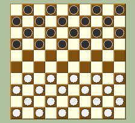

国际跳棋和西洋跳棋有什么区别吗？
#1 国际跳棋和西洋跳棋有什么区别吗？作者：竹子 发表时间：2007-12-3 14:16:28
国际跳棋的第一届比赛是一八九四年在法国举行的，冠军获得者是法国的и•魏斯。当时采用的就是棋盘为一百格的跳棋，叫着国际跳棋而不是棋盘为六十四格的西洋跳棋。西洋跳棋，每方12枚棋子；国际跳棋，每方20枚棋子。
西洋跳棋，兵至底线升变为王以后，只是有向后回跳的权利，还是每步一格；国际跳棋的王棋的走法与此不同，它可以前进，可以后退，只要在一条斜线上，一次移 动几格都可能。王棋的跳吃，也比兵的跳吃自由度要大得多。只要在同一斜线上，不管距离多么远，都可以跳过对方的这枚棋子，停在它后而的任何一个空格里，从而将对方这枚棋子吃掉。王棋的连跳，与兵的连跳大致相同，只是不限距离，只要有机会，一次可以跳吃对方的数枚棋子。
国际跳棋的兵可以向后跳吃子。西洋跳棋的兵不可以。
#2 Re:国际跳棋和西洋跳棋有什么区别吗？作者：nara 发表时间：2008-11-8 17:59:03
我帮竹子传两张图,让大家看的更形象点.知道这两种棋的区别!
西洋跳棋
国际跳棋
［ 孤竹 于 2008-11-8 20:01:42 时奖励此帖[金币加 20 威望加1］